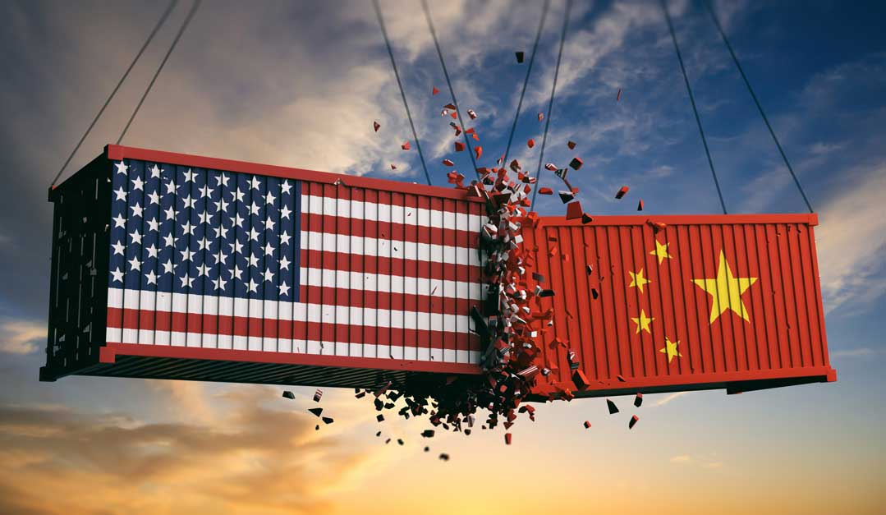
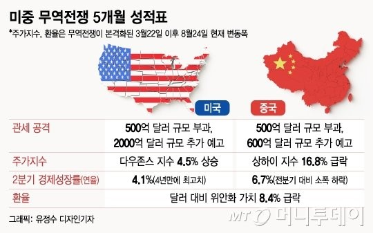
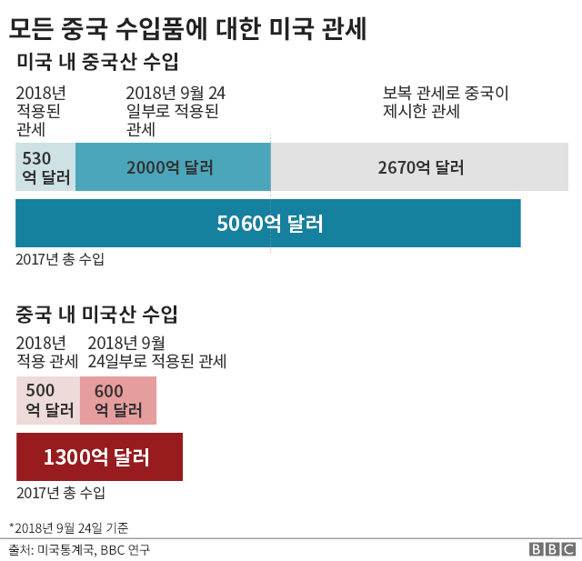

한국 표준시 기준으로 2018년 7월 6일 오후 1시(미국 동부 시간 2018년 7월 6일 자정) 미국이 예고했던대로 340억 달러 규모의 중국 수입품 818종에 25%의 보복관세를 부과하였고 중국이 이에 대한 보복 조치로 중국으로 수입되는 미국산 농산품, 자동차, 수산물 등에 미국과 똑같이 340억 달러 규모로 25% 보복관세를 부과하면서 시작된 양국간의 무역전쟁이다.
중국의 환율조작 의혹, 특권 침해, 본국 투자 해외기업에 대한 기술력 갈취 문제는 계속해서 제기되어 왔다. 다만, 중국의 거대 인구를 바탕으로 한 노동력 및 시장으로서의 가치 때문에 공론화가 되지 않았을 뿐이다. 이에 대해 트럼프는 후보 시절부터 계속 보호무역을 주장하였고 특히 중국을 노골적으로 언급했다.

트럼프는 "1차 폭탄은 예고편"이라면서 중국이 보복으로 미국 수입품에 보복관세를 부과하면 관세 부과를 유보한 2000억 달러와 남은 3000억 달러가 있다면서 "5천억 달러 추가 보복할 것"이라고 엄포를 놓았다. 중국의 대미수출액수가 5천억 달러가 넘으니 사실상 중국의 대미수출품 모두에 관세를 매기겠다고 한 것이나 같다.

결국엔 2018년 7월 10일(미국 동부시간), 미국 상무부와 무역대표부는 발표를 통해 중국산 제품 6,031종 2,000억 달러 어치에 대해 10% 추가 관세를 매기겠다고 발표하였다. 발효 시기는 발표 이후 60일 후이다. 링크 9월 8일(미국시간)부터 발효. 이 조치에 대해 중국에 최대한 타격을 주기 위해 신중히 선택했다는 반응이다. 그 후 25%로 관세율을 올렸다.
중국은 즉각 미국의 관세에 동일한 규모로 맞보복하고 WTO에 제소했다. 도널드 트럼프 미국 대통령이 중국이 반격하면 추가로 5000억 달러(약 558조 5000억원)의 중국산 수입품에 대해 고율 관세를 부과하겠다고 공언한 상황에서 중국의 반격이 순차적으로 진행되면서 미중 무역전쟁은 확전이 불가피하게 됐다.
2018년 7월 들어서 중국이 위안화 절하에 나서고 있다. 이에 대해 도널드 트럼프 미국 대통령은 미국 달러화의 강세에 대하여 거세게 반발하고 있다. 그러자 시진핑은 오히려 더 큰 폭으로 위안화를 절하했다.

시진핑이 아랍 에미리트를 방문하여 지지를 호소하였다. 기사 또한 일본한테 일대일로 사업 참가를 제안하여 일본과도 타협을 시도하고 있다.중국 내부 회의에서 무역전쟁 관련 회의를 할 예정이다.
2019년 5월 23일 중국의 전문가는 앞으로 무역 전쟁이 2035년까지 16년은 더 이어질 것이라고 했다.
이와중에 오바마 행정부가 행한 상계관세 분쟁에서 사실상 승소하였다.